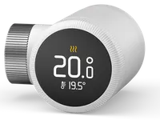

Find Tado thermostat manuals for the Wired Smart Thermostat V3+, Wireless Smart Thermostat V3+ (UK) and Smart Radiator Thermostat X. The installation and user guides open in the online viewer, and the product picture on each row helps match the Tado control on your wall. Tado controls are commonly fitted with UK gas boilers, so the matching boiler manual is worth keeping alongside the Tado thermostat manual.
| Image | User Manual | Installation Manual | Model | Info | ||
|---|---|---|---|---|---|---|
| View Tado Wired Smart Thermostat V3+ user manualTado Wired Smart Thermostat V3+ user manual PDF | View Tado Wired Smart Thermostat V3+ installation manualTado Wired Smart Thermostat V3+ installation manual PDF | Tado Wired Smart Thermostat V3+ | Wired stat + Bridge installer manual | |||
 | View Tado Wireless Smart Thermostat V3+ (UK) user manualTado Wireless Smart Thermostat V3+ (UK) user manual PDF | View Tado Wireless Smart Thermostat V3+ (UK) installation manualTado Wireless Smart Thermostat V3+ (UK) installation manual PDF | Tado Wireless Smart Thermostat V3+ (UK) | UK wireless receiver + sensor | ||
 | View Tado Smart Radiator Thermostat X user manualTado Smart Radiator Thermostat X user manual PDF | View Tado Smart Radiator Thermostat X installation manualTado Smart Radiator Thermostat X installation manual PDF | Tado Smart Radiator Thermostat X | Smart TRV head (X series) |
We list 3 Tado thermostats, programmers and controls; 3 link to 3 installation or user guides (PDF) hosted on BoilerManuals.com. Last checked .